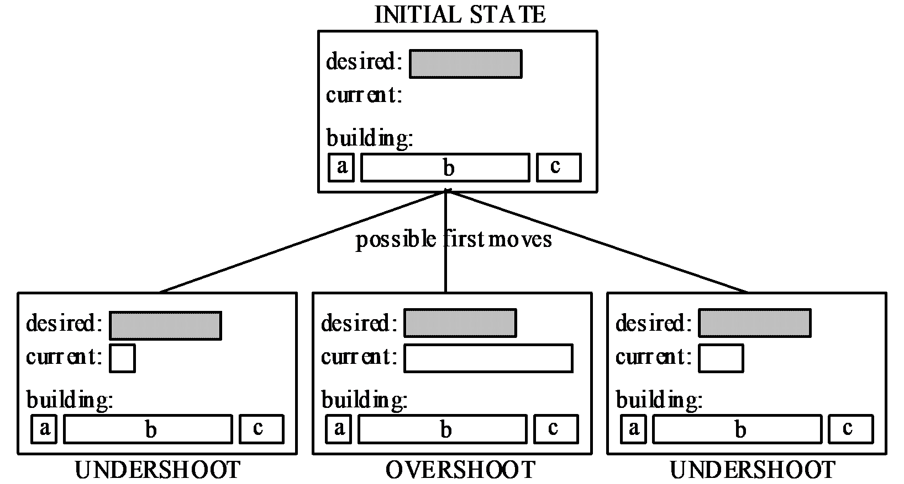
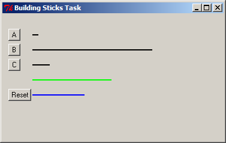

Unit 6: Selecting Productions on the Basis of Their Utilities
and Learning these Utilities
Occasionally, we have had cause to set parameters for productions so that one production will be preferred over another in the conflict resolution process. Now we will examine how production utilities are computed and used in conflict resolution. We will also look at how these utility values can be learned.
6.1 The Utility Theory
Each production has a utility associated with it which can be set directly as we have seen in some of the previous units. Like activations, utilities have noise added to them. The noise is controlled by the utility noise parameter s which is set with the parameter :egs. The noise is distributed according to a logistic distribution with a mean of 0 and a variance related to s by this equation:
If there are a number of productions competing with expected utility values Uj the probability of choosing production i is described by the formula:
The summation j is over all the productions which currently have their conditions satisfied. Note however that that equation only serves to describe the production selection process. It is not actually computed by the system. The production with the highest utility (after noise is added) will be the one chosen to fire.
6.2 Building Sticks Example
We will illustrate these ideas with an example from problem solving. Lovett (1998) looked at participants solving the building-sticks problem illustrated in the figure below. This is an isomorph of Luchins waterjug problem that has a number of experimental advantages. Participants are given an unlimited supply of building sticks of three lengths and are told that their objective is to create a target stick of a particular length. There are two basic strategies they can select – they can either start with a stick smaller than the desired length and add sticks (like the addition strategy in Luchins waterjugs) or they can start with a stick that is too long and “saw off” lengths equal to various sticks until they reach the desired length (like the subtraction strategy). We will call the first of those the undershoot strategy and the second the overshoot strategy. Subjects show a strong tendency to hillclimb and choose as their first stick a stick that will get them closest to the target stick.

You can go through a version of this task that was written to work with ACT-R models by loading the bst.lisp file in Lisp or importing the bst file in Python. The function bst-test in Lisp or test in the bst module in Python takes one parameter indicating how many sample pairs of problems to present and an optional second parameter which indicates whether a person or model is performing the task. The default is to run the model, so to run yourself through one pair of problems you would use one of these:
? (bst-test 1 t)
>>> bst.test(1,True)
The return value will be a list of two numbers indicating how many times you used the overshoot strategy on the first and second problem from the pair respectively.
The experiment will look something like this:

To do the task you will see four lines initially. The top three are black and correspond to the building sticks you have available. The fourth line is green and that is the target length you are attempting to build. The current stick you have built so far will be blue and below the target stick. You will build the current stick by pressing the button to the left of a stick you would like to use next. If your current line is shorter than the target the new stick will be added to the current stick, and if your current line is longer than the target the new stick will be subtracted from the current stick. When you have successfully matched the target length the word “Done” will appear below the current stick and you will progress to the next trial. At any time you can hit the button labeled Reset to clear the current stick and start over.
As it turns out, both of the problems presented in that test set can only be solved by the overshoot strategy. However, the first one looks like it can be solved more easily by the undershoot strategy. The exact lengths of the sticks in pixels for that problem are:
A = 15, B = 200, C = 41, Goal = 103
The difference between B and the goal is 97 pixels while the difference between C and the goal is only 62 pixels – a 35 pixel difference of differences. However, the only solution to the problem is B – 2C – A. The same solution holds for the second problem:
A = 10, B = 200, C = 29, Goal = 132
But in this case the difference between B and the goal is 68 pixels while the difference between C and the goal is 103 pixels – a 35 pixel difference of differences in the other direction. You can run the model on these problems and it will tend to choose undershoot for the first about 75% of the time and overshoot for the second about 75% of the time. You can run the model multiple times using the bst-test or test function with the number of pairs to run the model through to see the results for yourself. If you only run the model through one pair it will perform the task with a visible window so that you can watch it, but if you run more than one pair it will use a virtual window to complete the task faster.
The model for the task involves many productions for encoding the screen and selecting sticks. However, the critical behavior of the model is controlled by four productions that make the decision as to whether to apply the overshoot or the undershoot strategy.
(p decide-over
=goal>
isa try-strategy
state choose-strategy
strategy nil
=imaginal>
isa encoding
under =under
over =over
!eval! (< =over (- =under 25))
==>
=imaginal>
=goal>
state prepare-mouse
strategy over
+visual-location>
isa visual-location
kind oval
value "b")
(p force-over
=goal>
isa try-strategy
state choose-strategy
- strategy over
==>
=goal>
state prepare-mouse
strategy over
+visual-location>
isa visual-location
kind oval
value "b")
(p decide-under
=goal>
isa try-strategy
state choose-strategy
strategy nil
=imaginal>
isa encoding
over =over
under =under
!eval! (< =under (- =over 25))
==>
=imaginal>
=goal>
state prepare-mouse
strategy under
+visual-location>
isa visual-location
kind oval
value "c")
(p force-under
=goal>
isa try-strategy
state choose-strategy
- strategy under
==>
=goal>
state prepare-mouse
strategy under
+visual-location>
isa visual-location
kind oval
value "c")
The key information is in the over and under slots of the chunk in the imaginal buffer. The over slot encodes the pixel difference between stick b and the target stick, and the under slot encodes the difference between the target stick and stick c. These values have been computed by prior productions that encode the problem. If one of these differences appears to get the model much closer to the target (more than 25 pixels closer than the other as computed by a !eval! condition for simplicity) then the decide-under or decide-over productions can fire to choose the strategy. In all situations, the other two productions, force-under and force-over, can apply. Thus, if there is a clear difference in how close the two sticks are to the target stick there will be three productions (one decide, two force) that can apply and if there is not then just the two force productions can apply. The choice among the productions is determined by their relative utilities which we can see using the Procedural tool in the ACT-R Environment, or by using the spp command (called before running the task here):
? (spp force-over force-under decide-over decide-under)
>>> actr.spp('force-over', 'force-under', 'decide-over', 'decide-under')
Parameters for production FORCE-OVER:
:utility NIL
:u 10.000
:at 0.050
:reward NIL
:fixed-utility NIL
Parameters for production FORCE-UNDER:
:utility NIL
:u 10.000
:at 0.050
:reward NIL
:fixed-utility NIL
Parameters for production DECIDE-OVER:
:utility NIL
:u 13.000
:at 0.050
:reward NIL
:fixed-utility NIL
Parameters for production DECIDE-UNDER:
:utility NIL
:u 13.000
:at 0.050
:reward NIL
:fixed-utility NILThe productions’ current utility values, labeled :u, are set in the model using the spp command:
(spp decide-over :u 13)
(spp decide-under :u 13)
(spp force-over :u 10)
(spp force-under :u 10)The :u parameters are set to 10 for the force productions and to 13 for the decide productions since making the decision based on which one looks closer should be preferred to just guessing, at least initially. The :utility value shown in the output from spp indicates the last computed utility value for the production during a conflict-resolution event and includes the utility noise. The value of nil in the output above indicates that the production has not yet been used, which is the case since it hasn’t been run yet. If you run the model through the task and then check the parameters you will see something like this which shows the noisy utility values for the productions which matched the state and could possibly have been selected during conflict-resolution:
Parameters for production FORCE-OVER:
:utility 7.666
:u 10.000
:at 0.050
:reward NIL
:fixed-utility NIL
Parameters for production FORCE-UNDER:
:utility 9.705
:u 10.000
:at 0.050
:reward NIL
:fixed-utility NIL
Parameters for production DECIDE-OVER:
:utility 15.355
:u 13.360
:at 0.050
:reward NIL
:fixed-utility NIL
Parameters for production DECIDE-UNDER:
:utility NIL
:u 13.000
:at 0.050
:reward NIL
:fixed-utility NILLet us consider how these productions apply in the case of the two problems in the model. Since the difference between the under and over differences is 35 pixels, there will be one decide and two force productions that match for both problems. We can compute the probability of choosing each production using the equation shown above with the starting utilities for the productions and the fact that the noise parameter, s, is set to 3 in the model.
First, consider the probability of the decide production:
Similarly, the probability of the two force productions can be shown to be 0.248. Thus, there is a 0.248 probability that a force production will fire that has the model try to solve the problem in the direction other than it appears.
6.3 Utility Learning
So far we have only considered the situation where the production parameters are static. The utilities of productions can also be learned as the model runs based on rewards that are received by the model. When utility learning is enabled, the productions’ utilities are updated according to a simple integrator model (e.g. see Bush & Mosteller, 1955).. If Ui(n-1) is the utility of a production i after its n-1st application and Ri(n) is the reward the production receives for its nth application, then its utility Ui(n) after its nth application will be:
where is the learning rate and is typically set at 0.2 (this can be changed by adjusting the :alpha parameter in the model). This is also basically the Rescorla-Wagner learning rule (Rescorla & Wagner, 1972). According to this equation the utility of a production will be gradually adjusted until it matches the average reward that the production receives.
There are a couple of things to mention about the rewards. The rewards can occur at any time, and are not necessarily associated with any particular production. Also, a number of productions may have fired before a reward is delivered. The reward Ri(n) that production i will receive will be the external reward received minus the time from production i’s selection to the reward. This serves to give less reward to more distant productions. This is like the temporal discounting in reinforcement learning but proves to be more robust within the ACT-R architecture (not suggesting it is generally more robust). This reinforcement goes back to all of the productions which have been selected between the current reward and the previous reward.
There are two ways to provide rewards to a model: at any time the trigger-reward command can be used to provide a reward or the rewards can be attached to productions and those rewards will be applied after the corresponding production fires. Attaching rewards to productions can be the more convenient way to provide rewards to a model when they correspond to situations which the model will explicitly process. For instance, in the building sticks task the rewards are provided when the model successfully completes a problem and when it has to reset and start over, and there are productions which handle those situations: read-done detects that it has completed the problem and pick-another-strategy is responsible for choosing again after resetting. One can associate rewards with these outcomes by setting the reward values of those productions:
(spp pick-another-strategy :reward 0)
(spp read-done :reward 20)When read-done fires it will propagate a reward of 20 back to the previous productions which have been fired, with productions earlier in the sequence receiving smaller effective reward values because of the time to the reward being subtracted from the reward. If pick-another-strategy fires, a reward of 0 will be propagated back – which means that previous productions will actually receive a negative reward because of the time that passed. Consider what happens when a sequence of productions leads to a dead end, pick-another-strategy fires, another sequence of productions fire that leads to a solution, and then read-done fires. The reward associated with read-done will propagate back only to the production which fired after pick-another-strategy and no further because the reward only goes back as far as the last reward. Note that the production read-done will receive its own reward, and pick-another-strategy will not receive any of read-done’s reward since it will have received the reward from its own firing.
6.4 Learning in the Building Sticks Task
The following are the lengths of the sticks, whether the overshoot or undershoot strategy will solve the problem, the pixel length difference between the strategies and the target, and the percent choice of overshoot for each of the problems in the testing set from an experiment with a building sticks task reported in Lovett & Anderson (1996):
a b c Goal %OVERSHOOT Solution Under Over
15 250 55 125 20 Both 70 125
10 155 22 101 67 Over 79 54
14 200 37 112 20 Over 75 88
22 200 32 114 47 Over 82 86
10 243 37 159 87 Over 122 84
22 175 40 73 20 Over 33 102
15 250 49 137 80 Over 88 113
10 179 32 105 93 Over 73 74
20 213 42 104 83 Under 62 109
14 237 51 116 13 Under 65 121
12 149 30 72 29 Under 42 77
14 237 51 121 27 Over 70 116
22 200 32 114 80 Over 82 86
14 200 37 112 73 Over 75 88
15 250 55 125 53 Both 70 125
The majority of these problems look like undershoot gets closer to the solution (the closer value is in red) and in some cases the pixel difference is greater than 25 (the bold ones). However, the majority of the problems can only be solved by overshoot. The first and last problems are interesting because they are identical and look strongly like they are undershoot problems. It is the only problem that can be solved either by overshoot or undershoot. Only 20% of the participants solve the first problem by overshoot but when presented with the same problem at the end of the experiment 53% use overshoot.
The model which ran the test trials above can also perform the whole experiment, and will show performance similar to the data through the utility learning mechanism which is enabled in the model by setting the :ul parameter to t. The bst-experiment function in Lisp and the experiment function in the bst module for Python will run the model through the experiment multiple times averaging the results. The following shows the performance of the model averaged over 100 iterations of the experiment:
CORRELATION: 0.772
MEAN DEVIATION: 18.155
Trial 1 2 3 4 5 6 7 8 9 10 11 12 13 14 15
22.0 50.0 61.0 77.0 94.0 32.0 85.0 83.0 61.0 42.0 30.0 21.0 63.0 63.0 54.0
DECIDE-OVER : 13.2118
DECIDE-UNDER: 10.8572
FORCE-OVER : 12.0410
FORCE-UNDER : 6.6625Also printed out are the average values of the utility parameters for the critical productions after each run through the experiment. As can be seen, the two over productions have increased their utility while the under productions have had a drop off. On average, the force-over production has a slightly higher value than the decide-under production. It is this change in utility values that creates the increased tendency to choose the overshoot strategy.
This model also turns on the utility learning trace, the :ult parameter, which works similar to the activation trace shown in the previous unit. If you enable the trace in the model by setting the :v parameter to t then every time there is a reward given to the model the trace will show the utility changes for all of the productions affected by that reward. Here is the trace from a run showing the positive reward for successfully completing a trial and all of the productions that have fired since the last reward was given being rewarded and having their utility updated:
6.475 UTILITY PROPAGATE-REWARD 20
Utility updates with Reward = 20.0 alpha = 0.2
Updating utility of production START-TRIAL
U(n-1) = 0.0 R(n) = 13.525 [20.0 - 6.475 seconds since selection]
U(n) = 2.705
Updating utility of production FIND-NEXT-LINE
U(n-1) = 0.0 R(n) = 13.575 [20.0 - 6.425 seconds since selection]
U(n) = 2.715
Updating utility of production ATTEND-LINE
U(n-1) = 0.0 R(n) = 13.625 [20.0 - 6.375 seconds since selection]
U(n) = 2.7250001
Updating utility of production ENCODE-LINE-A
U(n-1) = 0.0 R(n) = 13.76 [20.0 - 6.24 seconds since selection]
U(n) = 2.752
Updating utility of production FIND-NEXT-LINE
U(n-1) = 2.715 R(n) = 13.809999 [20.0 - 6.19 seconds since selection]
U(n) = 4.934
Updating utility of production ATTEND-LINE
U(n-1) = 2.7250001 R(n) = 13.860001 [20.0 - 6.14 seconds since selection]
U(n) = 4.952
Updating utility of production ENCODE-LINE-B
U(n-1) = 0.0 R(n) = 14.01 [20.0 - 5.99 seconds since selection]
U(n) = 2.802
Updating utility of production FIND-NEXT-LINE
U(n-1) = 4.934 R(n) = 14.059999 [20.0 - 5.94 seconds since selection]
U(n) = 6.7592
Updating utility of production ATTEND-LINE
U(n-1) = 4.952 R(n) = 14.110001 [20.0 - 5.89 seconds since selection]
U(n) = 6.7836003
Updating utility of production ENCODE-LINE-C
U(n-1) = 0.0 R(n) = 14.245 [20.0 - 5.755 seconds since selection]
U(n) = 2.849
Updating utility of production FIND-NEXT-LINE
U(n-1) = 6.7592 R(n) = 14.295 [20.0 - 5.705 seconds since selection]
U(n) = 8.26636
Updating utility of production ATTEND-LINE
U(n-1) = 6.7836003 R(n) = 14.344999 [20.0 - 5.655 seconds since selection]
U(n) = 8.29588
Updating utility of production ENCODE-LINE-GOAL
U(n-1) = 0.0 R(n) = 14.48 [20.0 - 5.52 seconds since selection]
U(n) = 2.896
Updating utility of production ENCODE-UNDER
U(n-1) = 0.0 R(n) = 14.615 [20.0 - 5.385 seconds since selection]
U(n) = 2.923
Updating utility of production ENCODE-OVER
U(n-1) = 0.0 R(n) = 14.75 [20.0 - 5.25 seconds since selection]
U(n) = 2.95
Updating utility of production FORCE-OVER
U(n-1) = 10.0 R(n) = 14.8 [20.0 - 5.2 seconds since selection]
U(n) = 10.96
Updating utility of production MOVE-MOUSE
U(n-1) = 0.0 R(n) = 14.85 [20.0 - 5.15 seconds since selection]
U(n) = 2.97
Updating utility of production CLICK-MOUSE
U(n-1) = 0.0 R(n) = 15.358 [20.0 - 4.642 seconds since selection]
U(n) = 3.0716
Updating utility of production LOOK-FOR-CURRENT
U(n-1) = 0.0 R(n) = 15.708 [20.0 - 4.292 seconds since selection]
U(n) = 3.1416001
Updating utility of production ATTEND-LINE
U(n-1) = 8.29588 R(n) = 15.757999 [20.0 - 4.242 seconds since selection]
U(n) = 9.788304
Updating utility of production ENCODE-LINE-CURRENT
U(n-1) = 0.0 R(n) = 15.893 [20.0 - 4.107 seconds since selection]
U(n) = 3.1786
Updating utility of production CALCULATE-DIFFERENCE
U(n-1) = 0.0 R(n) = 16.028 [20.0 - 3.972 seconds since selection]
U(n) = 3.2056
Updating utility of production CONSIDER-C
U(n-1) = 0.0 R(n) = 16.078 [20.0 - 3.922 seconds since selection]
U(n) = 3.2155998
Updating utility of production CHOOSE-C
U(n-1) = 0.0 R(n) = 16.213 [20.0 - 3.787 seconds since selection]
U(n) = 3.2426
Updating utility of production MOVE-MOUSE
U(n-1) = 2.97 R(n) = 16.263 [20.0 - 3.737 seconds since selection]
U(n) = 5.6286
Updating utility of production CLICK-MOUSE
U(n-1) = 3.0716 R(n) = 16.713 [20.0 - 3.287 seconds since selection]
U(n) = 5.79988
Updating utility of production LOOK-FOR-CURRENT
U(n-1) = 3.1416001 R(n) = 17.063 [20.0 - 2.937 seconds since selection]
U(n) = 5.9258804
Updating utility of production ATTEND-LINE
U(n-1) = 9.788304 R(n) = 17.112999 [20.0 - 2.887 seconds since selection]
U(n) = 11.253243
Updating utility of production ENCODE-LINE-CURRENT
U(n-1) = 3.1786 R(n) = 17.248 [20.0 - 2.752 seconds since selection]
U(n) = 5.99248
Updating utility of production CALCULATE-DIFFERENCE
U(n-1) = 3.2056 R(n) = 17.383 [20.0 - 2.617 seconds since selection]
U(n) = 6.04108
Updating utility of production CONSIDER-C
U(n-1) = 3.2155998 R(n) = 17.433 [20.0 - 2.567 seconds since selection]
U(n) = 6.05908
Updating utility of production CHOOSE-C
U(n-1) = 3.2426 R(n) = 17.568 [20.0 - 2.432 seconds since selection]
U(n) = 6.1076803
Updating utility of production MOVE-MOUSE
U(n-1) = 5.6286 R(n) = 17.618 [20.0 - 2.382 seconds since selection]
U(n) = 8.02648
Updating utility of production CLICK-MOUSE
U(n-1) = 5.79988 R(n) = 17.668 [20.0 - 2.332 seconds since selection]
U(n) = 8.173504
Updating utility of production LOOK-FOR-CURRENT
U(n-1) = 5.9258804 R(n) = 17.868 [20.0 - 2.132 seconds since selection]
U(n) = 8.314304
Updating utility of production ATTEND-LINE
U(n-1) = 11.253243 R(n) = 17.918 [20.0 - 2.082 seconds since selection]
U(n) = 12.586195
Updating utility of production ENCODE-LINE-CURRENT
U(n-1) = 5.99248 R(n) = 18.053 [20.0 - 1.947 seconds since selection]
U(n) = 8.404584
Updating utility of production CALCULATE-DIFFERENCE
U(n-1) = 6.04108 R(n) = 18.188 [20.0 - 1.812 seconds since selection]
U(n) = 8.470464
Updating utility of production CONSIDER-C
U(n-1) = 6.05908 R(n) = 18.238 [20.0 - 1.762 seconds since selection]
U(n) = 8.494864
Updating utility of production CONSIDER-A
U(n-1) = 0.0 R(n) = 18.373 [20.0 - 1.627 seconds since selection]
U(n) = 3.6746
Updating utility of production CHOOSE-A
U(n-1) = 0.0 R(n) = 18.508 [20.0 - 1.492 seconds since selection]
U(n) = 3.7015998
Updating utility of production MOVE-MOUSE
U(n-1) = 8.02648 R(n) = 18.558 [20.0 - 1.442 seconds since selection]
U(n) = 10.132784
Updating utility of production CLICK-MOUSE
U(n-1) = 8.173504 R(n) = 19.045 [20.0 - 0.955 seconds since selection]
U(n) = 10.347803
Updating utility of production LOOK-FOR-CURRENT
U(n-1) = 8.314304 R(n) = 19.395 [20.0 - 0.605 seconds since selection]
U(n) = 10.530443
Updating utility of production ATTEND-LINE
U(n-1) = 12.586195 R(n) = 19.445 [20.0 - 0.555 seconds since selection]
U(n) = 13.957956
Updating utility of production ENCODE-LINE-CURRENT
U(n-1) = 8.404584 R(n) = 19.58 [20.0 - 0.42 seconds since selection]
U(n) = 10.6396675
Updating utility of production CALCULATE-DIFFERENCE
U(n-1) = 8.470464 R(n) = 19.715 [20.0 - 0.285 seconds since selection]
U(n) = 10.719371
Updating utility of production CHECK-FOR-DONE
U(n-1) = 0.0 R(n) = 19.765 [20.0 - 0.235 seconds since selection]
U(n) = 3.9529998
Updating utility of production FIND-DONE
U(n-1) = 0.0 R(n) = 19.815 [20.0 - 0.185 seconds since selection]
U(n) = 3.963
Updating utility of production READ-DONE
U(n-1) = 0.0 R(n) = 19.95 [20.0 - 0.05 seconds since selection]
U(n) = 3.9900002
6.475 ------ Stopped because event limit reachedBeing able to see the changes that happen as a result of a reward can be helpful when trying to fit a model to data, particularly with respect to the temporal discounting that changes the effective reward for each production.
6.5 Other Chunk-type Capabilities
Before discussing the assignment task for this unit, we are going to point out a few of the productions in this model which appear to be doing things differently than those in previous units. If we look at the actions of the productions encode-line-goal and click-mouse we see that they seem to be missing the cmd slot in the requests to the visual and manual buffers which we have seen previously, and instead are only declaring a chunk-type with an isa:
(p encode-line-goal
=goal>
isa try-strategy
state attending
=imaginal>
isa encoding
c-loc =c
goal-loc nil
=visual>
isa line
screen-pos =pos
width =length
?visual>
state free
==>
=imaginal>
goal-loc =pos
length =length
=goal>
state encode-under
+visual>
isa move-attention
screen-pos =c)
(p click-mouse
=goal>
isa try-strategy
state move-mouse
?manual>
state free
==>
=goal>
state wait-for-click
+manual>
isa click-mouse)
Also, the isa declarations on the LHS of the encode-line-goal and read-done productions are declaring chunk-types other than visual-object which was previously indicated as the chunk-type that specified the slots used for creating the representation of visual objects for the visual buffer:
(p encode-line-goal
=goal>
isa try-strategy
state attending
=imaginal>
isa encoding
c-loc =c
goal-loc nil
=visual>
isa line
screen-pos =pos
width =length
?visual>
state free
==>
=imaginal>
goal-loc =pos
length =length
=goal>
state encode-under
+visual>
isa move-attention
screen-pos =c)
(p read-done
=goal>
isa try-strategy
state read-done
=visual>
isa text
value "done"
==>
+goal>
isa try-strategy
state start)
These productions are relying on two other capabilities that can be used when creating chunk-types: the specification of default values for slots and the ability to create a hierarchy of types. Even though the chunk-types themselves are only a declaration that does not become part of the production, these mechanisms do allow a chunk-type declaration to have an effect on the contents of the production. Details on those mechanisms can be found in the code document for this unit.
6.6 Learning in a Probability Choice Experiment
Your assignment is to develop a model for a "probability matching" experiment run by Friedman et al. (1964). However, unlike the assignments for previous units, you are not provided with the code that implements the experiment this time. Therefore you will need to first write the experiment, and then develop the model, which more closely represents the typical modeling situation. The experiment to be implemented is very simple. Here is the basic procedure which is repeated for 48 trials:
1. The participant is presented with a screen saying "Choose"
2. The participant either presses the ‘h’ key for heads or the ‘t’ key for tails
3. When the key is pressed the screen is cleared and the feedback indicating the correct answer, either "Heads" or "Tails", is displayed.
4. That feedback stays on the screen for exactly 1 second before the next trial is presented.
Friedman et al. arranged it so that heads was the correct choice on 10%, 20%, 30%, 40%, 50%, 60%, 70%, 80%, and 90% of the trials (independent of what the participant had done). For your experiment you will only be concerned with the 90% condition. Thus, your experiment will be 48 trials long and “Heads” will be the correct answer 90% of the time. We have averaged together the data from the 10% and 90% conditions (flipping responses) to get an average proportion of choice of the dominant answer in blocks of 12 trials. These proportions are 0.664, 0.778, 0.804, and 0.818. This is the data that your model is to fit. It is important to note that this is the proportion of choice for heads, not the proportion of correct responses – the correctness of the response does not matter.
Your model must begin with a 50% chance of saying heads, then based on the feedback from the experiment it must adjust its choice through utility learning so that it averages responding heads close to 66% over the first block of 12 trials, and increases to about 82% by the final block. You will run the model through the experiment many times (resetting before each experiment) and average the data of those runs for comparison. As an aspiration level, this is the performance of the model that I wrote, averaged over 100 runs:
CORRELATION: 0.998
MEAN DEVIATION: 0.010
Original Current
0.664 0.655
0.778 0.785
0.804 0.819
0.818 0.823In achieving this, the parameters I worked with were the noise in the utilities (set by the :egs parameter) and the rewards associated with successful and unsuccessful responses.
The starting model for this task, found in the choice-model.lisp file of the unit, only contains the calls to clear ACT-R to its initial state and create a model named choice which has no content. You will need to write the whole model.
The initial code for this task can be found in the choice.lisp and choice.py files. It contains the call to load the starting model, specifies the experimental data, a global variable for collecting a response, and includes two functions. The first function is used as a monitor for the output-key action and just sets a global variable to record the response (as was done in many of the previous tasks). The other function, called choice-person in the Lisp version and person in the Python version, is a correct implementation of the task described for running a person through a single trial, and it returns the key which was pressed.
You should write a similar function to run the model through one trial, which should be named choice-model (in Lisp) or model (in Python). You will also need to write a function that takes one parameter and runs the whole experiment that many times and prints out the average results of the runs and the correlation and deviation of the average data to the experimental data. That function should be named choice-data (in Lisp) and data (in Python). That function does not have to be able to run a person through the task. It only needs to be able to run the model.
My suggestion would be to first write the single trial function making sure that it correctly represents the experiment described, including the timing. Then write a model that is able to perform that task correctly. Next write a function to run a block of 12 trials and test that to make sure the model works correctly when going from trial to trial. Then write a function to iterate over 4 blocks for running one pass of the experiment and test that. After that is working write the function to run the experiment multiple times. Only then should you be concerned with actually fitting the model to the data, once you are sure everything else works.
To write the experiment for the model you will need to use some of the ACT-R commands that were discussed in the previous units’ code texts in addition to those already used in the function for running a person. The necessary commands will be described again here briefly, and the experiments you have seen up to this point should provide plenty of examples of their use.
The reset function initializes ACT-R. It returns the model to the initial state as specified in the model file. It is the programmatic equivalent of pressing the “Reset” button in the ACT-R Environment.
The run function can be used to run the model until either it has nothing to do or the specified amount of time has passed. It has one required parameter, which is the maximum amount of time to run the model in seconds.
The run-full-time/run_full_time function can be used to run the model for a specific amount of time. It takes one parameter which is the amount of time to run the model in seconds.
The install-device/install_device function takes one parameter which specifies a device the model will interact with and the value returned from opening the experiment window is the device of interest for this task.
In addition to those functions you should also use the correlation and mean-deviation/mean_deviation functions. Those calculate the correlation and root mean square deviation between two lists of numbers.
6.6.1 Example experiment functions
The paired associate task from unit 4 is a good example to look at for creating your experiment, and the do-experiment function in the Lisp version and the do_experiment function in the Python version have a very similar structure to what you will need for presenting a trial of this choice experiment. The paired associate functions are a little more complicated than the function you will need for this assignment because they can run either a person or the model and are also recording response times and averaging the data over multiple runs which your single trial function will not need to do. They also call reset which you should not do in your single trial function because you want the model to continue to learn from trial to trial. You should only call reset at the start of each pass through the whole experiment (four blocks of 12 trials). Ignoring those complications, it performs a similar sequence of operations to those necessary to do this experiment: open a window, tell the model to interact with that window, present an item of text, run the model, clear the screen, display another item of text, and then run the model again. Those functions are copied here (without the comments) and the relevant operations are highlighted in green.
Lisp
(defun do-experiment (size trials human)
(if (and human (not (visible-virtuals-available?)))
(print-warning "Cannot run the task as a person without a visible window available.")
(progn
(reset)
(let* ((result nil)
(model (not human))
(window (open-exp-window "Paired-Associate Experiment" :visible human)))
(when model
(install-device window))
(dotimes (i trials)
(let ((score 0.0)
(time 0.0))
(dolist (x (permute-list (subseq *pairs* (- 20 size))))
(clear-exp-window window)
(add-text-to-exp-window window (first x) :x 150 :y 150)
(setf *response* nil)
(let ((start (get-time model)))
(if model
(run-full-time 5)
(while (< (- (get-time nil) start) 5000)
(process-events)))
(when (equal *response* (second x))
(incf score 1.0)
(incf time (- *response-time* start)))
(clear-exp-window window)
(add-text-to-exp-window window (second x) :x 150 :y 150)
(setf start (get-time model))
(if model
(run-full-time 5)
(while (< (- (get-time nil) start) 5000)
(process-events)))))
(push (list (/ score size) (if (> score 0) (/ time score 1000.0) 0)) result)))
(reverse result)))))
Python
def do_experiment(size, trials, human):
if human and not(actr.visible_virtuals_available()):
actr.print_warning("Cannot run the task as a person without a visible window.")
else:
actr.reset()
result = []
model = not(human)
window = actr.open_exp_window("Paired-Associate Experiment",visible=human)
if model:
actr.install_device(window)
for i in range(trials):
score = 0
time = 0
for prompt,associate in actr.permute_list(pairs[20 - size:]):
actr.clear_exp_window(window)
actr.add_text_to_exp_window (window, prompt, x=150 , y=150)
global response
response = ''
start = actr.get_time(model)
if model:
actr.run_full_time(5)
else:
while (actr.get_time(False) - start) < 5000:
actr.process_events()
if response == associate:
score += 1
time += response_time - start
actr.clear_exp_window(window)
actr.add_text_to_exp_window (window, associate, x=150 , y=150)
start = actr.get_time(model)
if model:
actr.run_full_time(5)
else:
while (actr.get_time(False) - start) < 5000:
actr.process_events()
if score > 0:
average_time = time / score / 1000.0
else:
average_time = 0
result.append((score/size,average_time))
return result
In the choice files provided, the function for running a person provides the general structure for performing a trial in this task: it opens a window, creates a monitor for recording the key press, adds the choose prompt to the screen, clears that prompt, and then displays the feedback. However, instead of running a model it waits for a person to press the key and waits for 1 second of real time to pass.
Lisp
(defun choice-person ()
(when (visible-virtuals-available?)
(let ((window (open-exp-window "Choice Experiment" :visible t)))
(add-act-r-command "choice-response" 'respond-to-key-press "Choice task key response")
(monitor-act-r-command "output-key" "choice-response")
(add-text-to-exp-window window "choose" :x 50 :y 100)
(setf *response* nil)
(while (null *response*)
(process-events))
(clear-exp-window window)
(add-text-to-exp-window window (if (< (act-r-random 1.0) .9) "heads" "tails") :x 50 :y 100)
(let ((start (get-time nil)))
(while (< (- (get-time nil) start) 1000)
(process-events)))
(remove-act-r-command-monitor "output-key" "choice-response")
(remove-act-r-command "choice-response")
*response*)))
Python
def person():
global response
if actr.visible_virtuals_available():
window = actr.open_exp_window("Choice Experiment",visible=True)
actr.add_command("choice-response",respond_to_key_press,"Choice task key response")
actr.monitor_command("output-key","choice-response")
actr.add_text_to_exp_window (window, 'choose', x=50, y=100)
response = ''
while response == '':
actr.process_events()
actr.clear_exp_window(window)
if actr.random(1.0) < .9:
answer = 'heads'
else:
answer = 'tails'
actr.add_text_to_exp_window (window, answer, x=50, y=100)
start = actr.get_time(False)
while (actr.get_time(False) - start) < 1000:
actr.process_events()
actr.remove_command_monitor("output-key","choice-response")
actr.remove_command("choice-response")
return response
What you must do is write the corresponding function that has the appropriate interaction for the ACT-R model to perform the task. The code with a line through it is only a safety test for running a person and should not be included in your model running version. The code colored red above handles the interaction for a person doing the task, and that is not the same as what will be needed to run a model. It should be replaced with the appropriate code for the model to interact with the task, which will be similar to the green code from the paired example above – the important difference is that the timing for the paired task is not the same as the timing in this task so you will have to adjust that appropriately.
Something else to think about is that the exact placement of the choose prompt and the feedback of heads and tails is not specified in the description of the task. Therefore, your model should not assume anything about their locations i.e. your model should still be able to do the task regardless of where on the screen the choose prompt and the feedback occur. In the given function for running a person, the answer is presented in the same location as the word “choose”, but your model should also be able to perform the task if they are presented in different locations.
One final thing to note is that the paired associate task is an example of the “trial at a time” approach to building an experiment as discussed in the unit 4 code documentation, and that is probably the easiest way to approach this task. However, it is also possible to write this experiment using the “event-driven” style which was also discussed in the unit 4 code documentation. If you want to use that approach it will require a little more work to program because it does not analogize as neatly to one of the previous units’ tasks. If you would like to try to write the experiment in that way you should look at the zbrodoff experiment from unit 4 as an example instead of the paired associate experiment. In fact, the different ways to write the experiment may have a small effect on the data fitting for this model because they will likely result in slightly different timing on the events which may affect the rewards received by the productions. For the paired associate task the style of the experiment was not an issue because the lengths of the trials were fixed, but in this case, because the trials are supposed to transition when the key press occurs, an event-driven experiment will provide a more veridical timing sequence. That is because the screen change will happen exactly when the key press occurs, which will not be the case if the model is run until it stops first as the trial at a time version typically involves. However, that will be a very minor difference and since you will be fitting the parameters in your model to the task you have written, that difference should not matter for matching the data, and either approach is acceptable for the assignment.
References
Bush, R. R., & Mosteller, F. (1955). Stochastic Models for Learning. New York: Wiley.
Friedman, M. P., Burke, C. J., Cole, M., Keller, L., Millward, R. B., & Estes, W. K., (1964). Two-choice behavior under extended training with shifting probabilities of reinforcement. In R. C. Atkinson (Ed.), Studies in mathematical psychology (pp. 250-316). Stanford, CA: Stanford University Press.
Lovett, M. C., & Anderson, J. R. (1996). History of success and current context in problem solving: Combined influences on operator selection. Cognitive Psychology, 31, 168-217.
Rescorla, R. A., & Wagner, A. R. (1972). A theory of Pavlovian conditioning: Variations on the effectiveness of reinforcement and nonreinforcement. In A. H. Black & W. R. Prokasy (eds.), Classical Conditioning: II. Current Research and Theory (pp. 64-99). New York: Appleton-Century-Crofts.